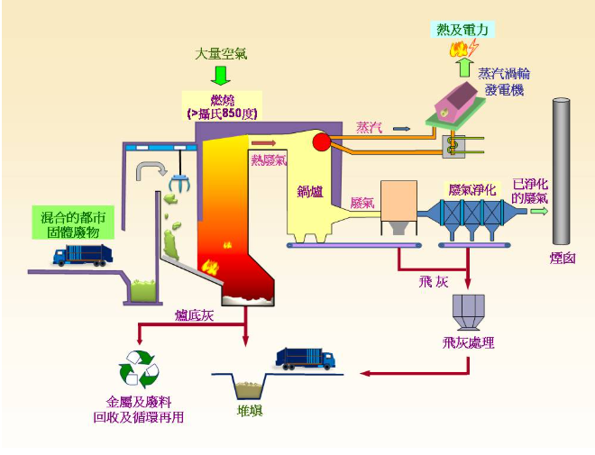
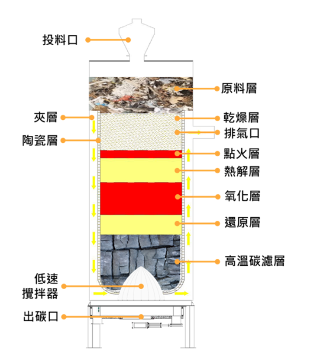

確保所有人都能取得可負擔、可靠、永續且現代化的能源
廢棄物發電是將垃圾轉化為能源的技術，兼顧環境保護與能源回收，是循環經濟的重要一環。 廢棄物發電根據原理可分為焚化發電和氣化發電。
焚化發電是利用廢棄物中所含的可燃成分，在高溫焚化爐中進行燃燒，將化學能轉換為熱能。 燃燒所產生的熱能用來加熱鍋爐中的水，形成高壓蒸氣，再利用蒸氣推動汽輪機旋轉，將熱能轉換為機械能。 最後，汽輪機帶動發電機運轉，進一步將機械能轉換為電能，完成發電過程。

圖：焚化發電示意圖
氣化發電是將廢棄物或生質燃料置於高溫、缺氧或少氧的環境中進行熱分解，使燃料不完全燃燒，而是轉化為可燃的合成氣。 合成氣經過冷卻與淨化後，送入燃燒設備或引擎中燃燒，產生熱能，進而推動汽輪機或內燃機運轉， 將化學能轉換為機械能，最後由發電機將機械能轉換為電能，完成發電過程。

圖：氣化發電示意圖